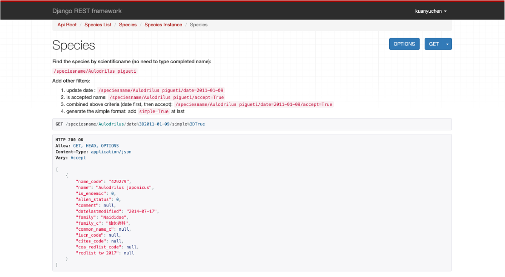

陳冠伃 Vivian
就讀台灣大學生態學與演化生物學研究所
就讀台灣大學生態學與演化生物學研究所，擁有超過三年的 R 經驗，透過數據分析探討生態問題。喜歡學習、思考、創造及解決問題的過程，因而接觸程式語言，具備Python、SQL、Javascript、HTML5及CSS的能力。想藉由此工作機會跳脫學校及學術的框架了解業界的運作模式。
Skills
TOELF:96
Education
國立台灣大學
國立中山大學
Experience
TaiBIF 台灣生物多樣性資訊機構
中央研究院生物多樣性中心
系學會幹部
大學時期積極參與系上活動，擔任系學會服務組組長，管理系上器材及公共空間。與學會幹部共同舉辦系上活動，負責租借場地、場控，學習與人溝通調解及管理組員。
參與工作坊
為精進多元發展，參與由聲音分析工作坊以及postSQL資料管理工作坊。學習分離蝙蝠叫聲與背景環境聲音的技術，能提高未來研究的效率。另外，為因應未來大數據的時代，學習postSQL及Database Designs以整理不同類型的資料。
接待外國學者
接待美國Bryn Mawr College 師生學術參訪團到福山植物園了解亞熱帶森林的生態，用英文為他們介紹福山植物園的蝙蝠超音波研究及當地生態。除學術解說，也為他們安排住宿、交通及參訪行程。
Awards & Certifications
-
台灣大學生命科學院院長獎
2019年台灣大學生命科學院，應屆畢業生一百多人中，獲得院長獎。
-
傑出壁報獎
2019臺大師大生態演化學術聯合發表會暨壁報展，於會中公開展示研究成果海報及口頭報告，獲得傑出獎。
-
口頭競賽佳獎
2017年參加全國生態環境領域中，規模最大的動物行為暨生態研討會，公開演講，獲得佳作。
-
壁報競賽第三名
2016年暑假至中央研究院生物多樣性中心實習，以兩個月的研究專題為題公開展示成果。
Motivation
由於碩士論文研究需要利用Ｒ語言開發聲音抓取工具，故對於撰寫程式語言感興趣，尤其是學習及發想的過程。完成論文研究後，修習與網路設計相關課程而接觸前端網頁設計。 為了更加了解網頁開發領域，在等待出國交換的空白期間，我到台灣生物多樣性資訊機構打工，一邊學習前端與後端的技術，一邊摸索自己未來的方向與興趣。最後，選擇往後端工程師發展，因為自身碩士研究的背景而喜歡處理資料、設計功能以利使用者應用資料。
Autobiography
碩士時期較專注於資料分析及學術文章的閱讀，發覺生態領域除了野外調查的能力，也須具備資料整理、統計分析等相關能力，因此將重心轉移至程式語言的學習。我的碩士論文研究探討氣溫變異如何影響蝙蝠群落，因此我在台灣各處設置錄音機錄製蝙蝠叫聲。 我獨立完成出差的行程規劃、工作程序、機器設定及資料分析，讓我有能力獨當一面解決不同的問題。這些經歷讓我在轉換跑道時受益良多，因為在自學網頁開發的過程中，遇到各種大小問題，我均能保持耐心與化解挫敗感，找尋各種管道解決問題，並在完成工作中得到成就感。 在台灣生物多樣性資訊機構擔任助理工程師的期間，我深刻體會到解決問題的能力以及了解使用者需求的重要性，這些經歷是我在自學程式的過程中所缺乏的，現在我對於商業模式的運行充滿好奇，也期待未來有更多機會能學習不同新知。
Portfolio
合作專案- TaiBIF
TaiBIF 為臺灣生物多樣性資訊網站，提供大眾查詢生物多樣性資料，包括物種基本介紹及其出現紀錄。此專案框架為Django及Docker，我主要負責網站圖形介面設計，新增不同功能以利使用者查詢、閱讀及使用生物多樣性資料。
利用python開發學名比對工具，根據不同學名狀況產生符合條件的學名格式，並到資料庫抓取物種ID。該專案給予我機會結合自己原專業科目知識，設計出最全面性的搜尋條件。
合作專案- 臺灣自動相機資訊系統
臺灣自動相機資訊系統提供研究學者及各林管處上傳、存放及分析調查資料，包括動物影像檔及出現資料檔。 此專案架構為前端及後端分開，主要由api傳送資料。我主要負責開發網站上傳功能、資料分析運算、指標介面等。
透過此專案，接觸非關聯性資料庫mongoDB及Vue，對於前後端的分隔更有概念。不只如此，此專案讓我有機會能夠參與使用者教學的demo，與使用者面對面溝通，直接了解使用者需求，增進功能的開發需求，像是較通用的上傳流程。
利用javascript開發xlsx上傳功能，了解各樣類型的資料性質與架構，抓取特定欄位，檢查其內容，並存入資料庫中。另外，新增資料分析頁面，主要利用aggregation來彙整mongoDB內各樣點資料，並產出excel表格。
獨立專案- TaiCol API
獨立完成學名搜尋的api，從Django的框架設定、mySQL連接設定至docker-compose的打包，獨自完成該專案。該專案給予我機會學習Django REST framework，並結合自身生物專業，設計出不同的篩選條件，例如：已更新時間或是俗名來交叉比對。
